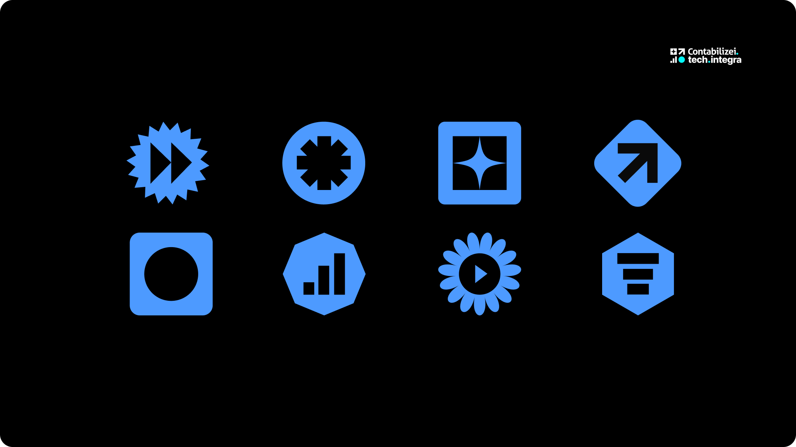
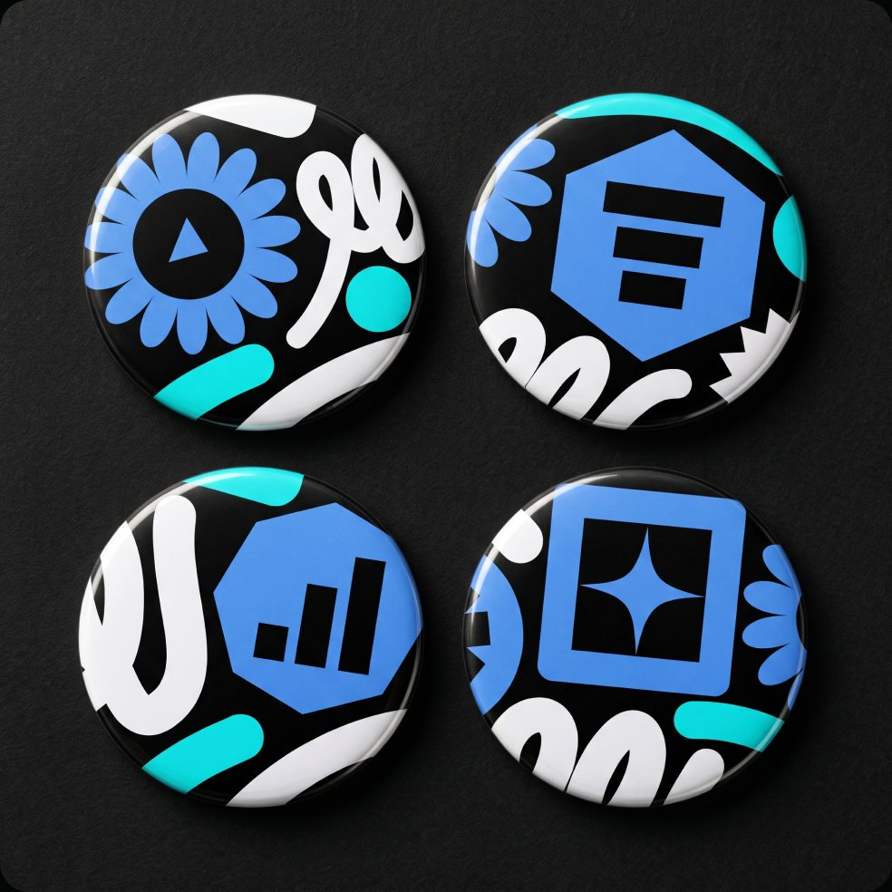
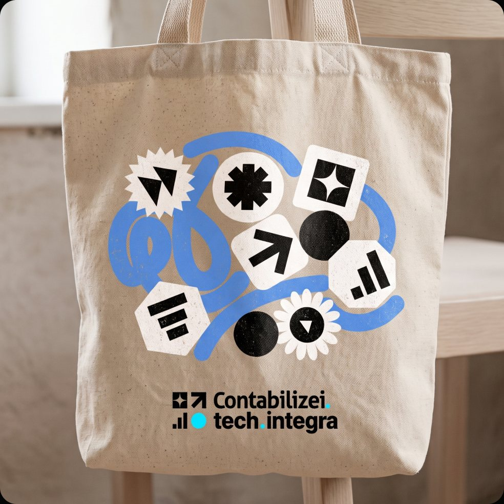
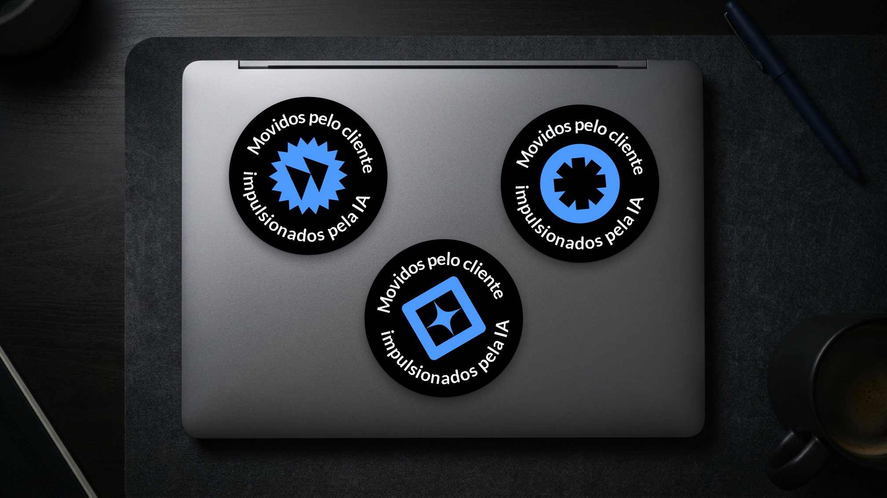
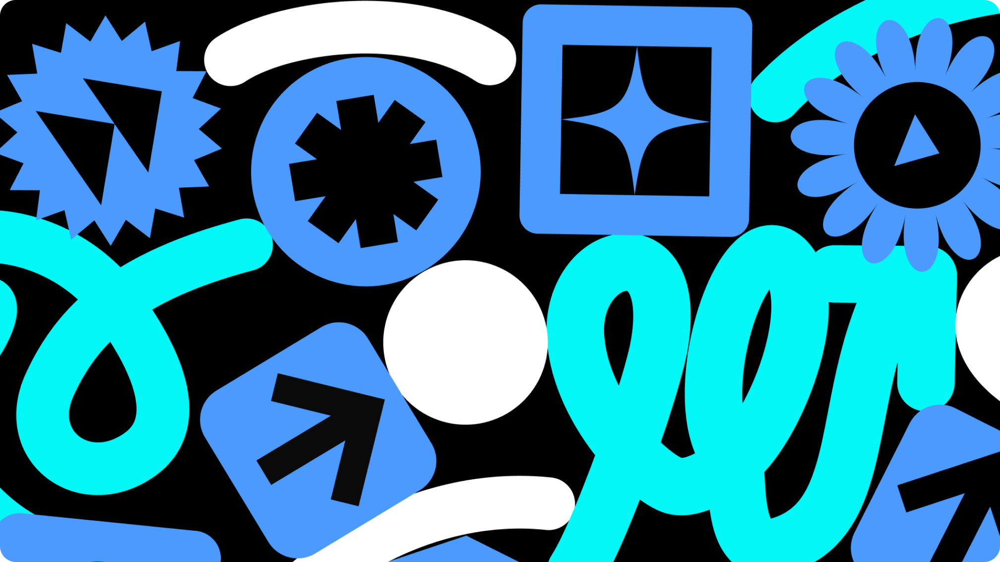

Evento Tech Integra
Identidade visual do encontro do time de tecnologia da Contabilizei, um tema guiou tudo: movidos pelo cliente, impulsionados pela IA.
- Cliente
- Contabilizei
- Tipo
- Evento interno de tecnologia
- Público
- +250 participantes
- Entregas
- Identidade, ícones, motion, adesivos e peças do evento
Uma marca própria para o time de tech
O Tech Integra reúne todo o time de tecnologia da Contabilizei em um dia de palestras, troca de experiências e hackathon.
O desafio era criar uma identidade que conversasse com a marca Contabilizei, mas tivesse personalidade própria e traduzisse o tema do evento: movidos pelo cliente, impulsionados pela IA.
A solução foi um sistema de ícones geométricos e traços gestuais em azul, ciano e branco sobre preto, fácil de desdobrar em telas de palco, crachás, cordões, camisetas, adesivos e animações.

Iconografia
Uma família de 8 ícones construída a partir de formas geométricas simples, que representam tecnologia, velocidade, dados e inteligência artificial.

Brindes
Bottons, adesivos e wallpapers levaram a identidade do evento para o dia a dia dos participantes.
Bottons ecobag


Adesivos

Wallpapers

A identidade no evento
Crachás, cordões, camisetas e telas de palco levaram o sistema visual para todos os pontos de contato.


- participantes
- +250
- de evento
- 8h
Gostou do projeto?
Veja outros trabalhos ou vamos conversar sobre o seu.